concept : 2D Matrix
2D Matrix: The vertical axis represents whether emotion or reason takes precedence, while the horizontal axis represents whether the human-machine boundary is blurred or unclear. In my envisioned future, the human-machine boundary is blurred, with more and more biomimetic machine tools being applied to the real world, and machines possessing more ecological forms and emotional feedback. Therefore, my conceptual design for 3D objects starts from this dimension. What I want to express is a beautiful vision of a future world where humans and machines coexist harmoniously.
In the future, the human body will be enhanced through symbiotic technology, with the heart evolving to draw energy from organisms or plants. An artificial heart is surrounded by an organic skeleton. Plant energy is supplied to the artificial heart through bio-organic transport channels. The heart is transparent and visible, its internal organs energized by plant energy, living alongside life and reflecting a complex dance of harmony between biological and technological elements.
This futuristic artifact explores the concept of a future symbiotic heart, showcasing its dynamic structure and the seamless integration of organic and synthetic components. The model highlights the heart's ability to adapt and evolve, responding to the host's needs while maintaining its core functions.
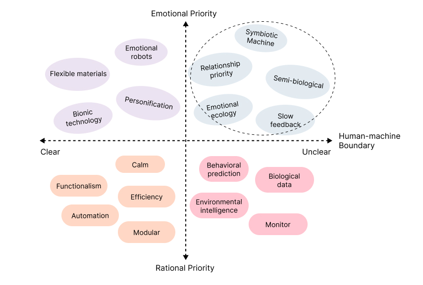
process : 3D Modeling
The 3D modeling process for the future symbiotic heart involves creating a detailed and complex design to capture the essence of a living respiratory organ while incorporating future technologies. The model is created using Blender, employing techniques such as stretching, subdivision, and sculpting to construct the shape, structure, and texture of the skeleton and heart.
Model Reference
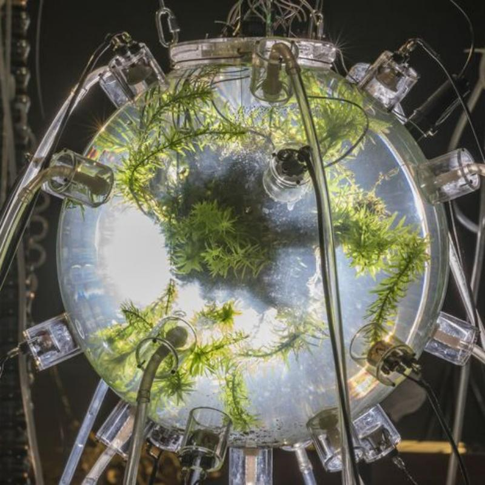
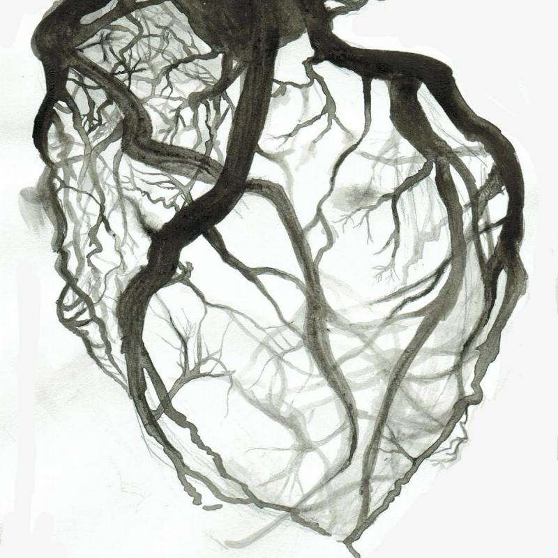
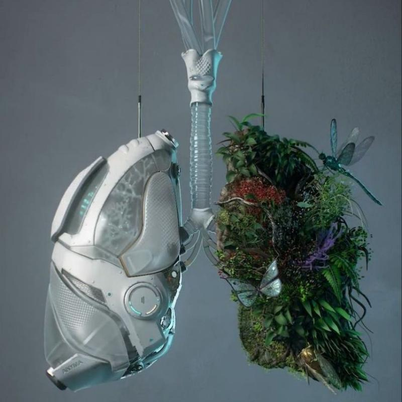
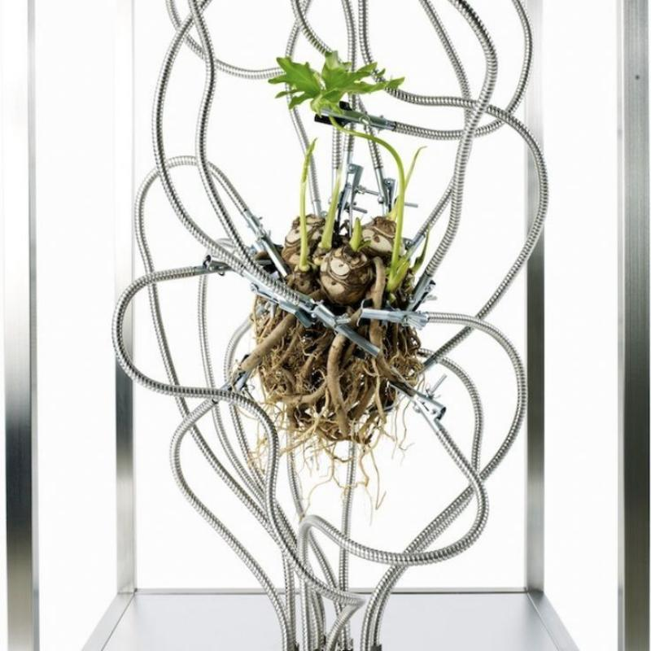
Texture Reference
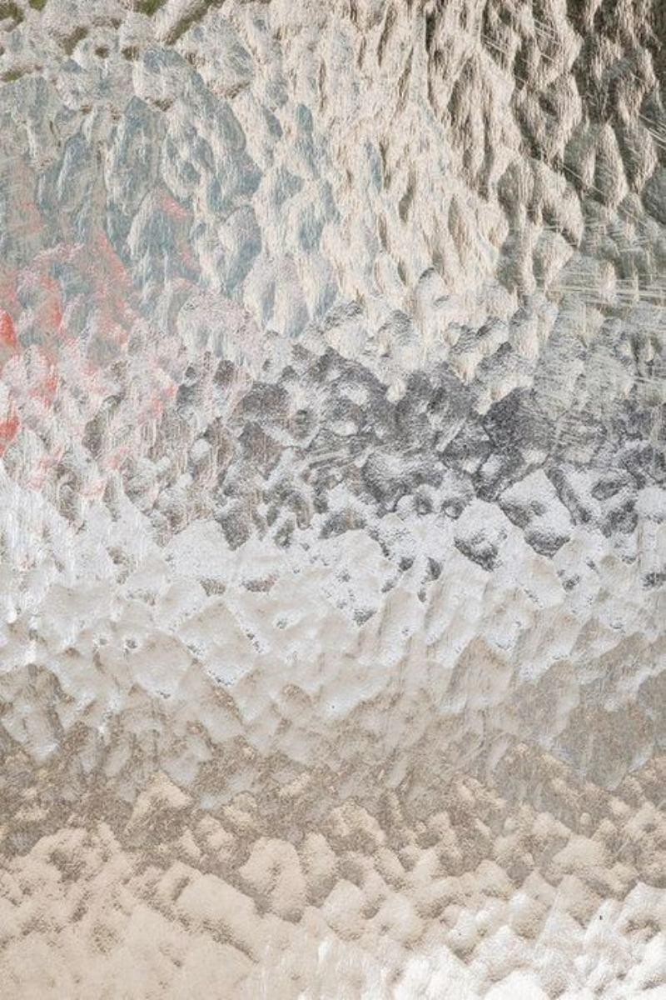
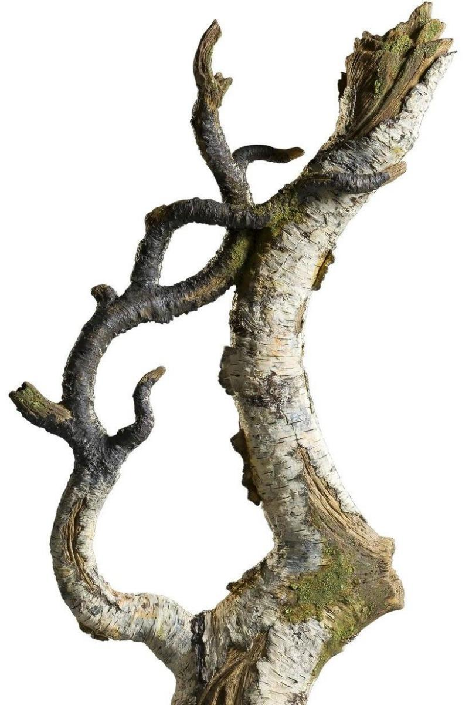
Key steps in the modeling process included:
- 1.Skeletal shell conceptualization: outlining the initial skeletal appearance and defining the overall ecological and organic appearance and feel.
- 2.Skeletal protection modeling: Using polygon modeling techniques, a basic framework of the ribs that enclose the heart is created.
- 3.Glass Heart Modeling: Construct the organic shape of the internal organs using sculpting tools.
- 4.Adding Surface Details: Adding intricate details to the exterior of the heart, such as simulating uneven outer surface lines, to enhance realism.
- 5.Texture: Different textures and materials were selected and built for the entire model. The heart is made of uneven glass, while the internal organs are made of green frosted material, reflecting the concept that it is powered by plant energy. The winding tree roots, intertwined and intertwined, embody the vitality of the plant.
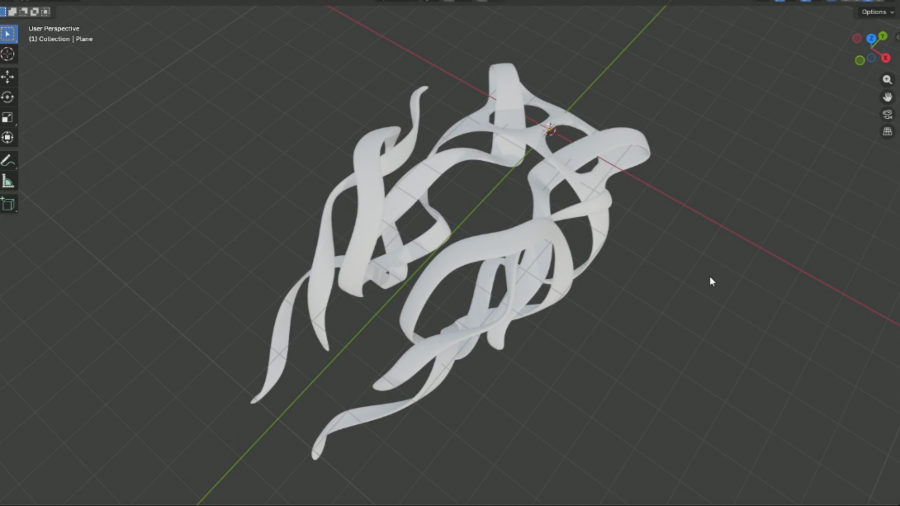
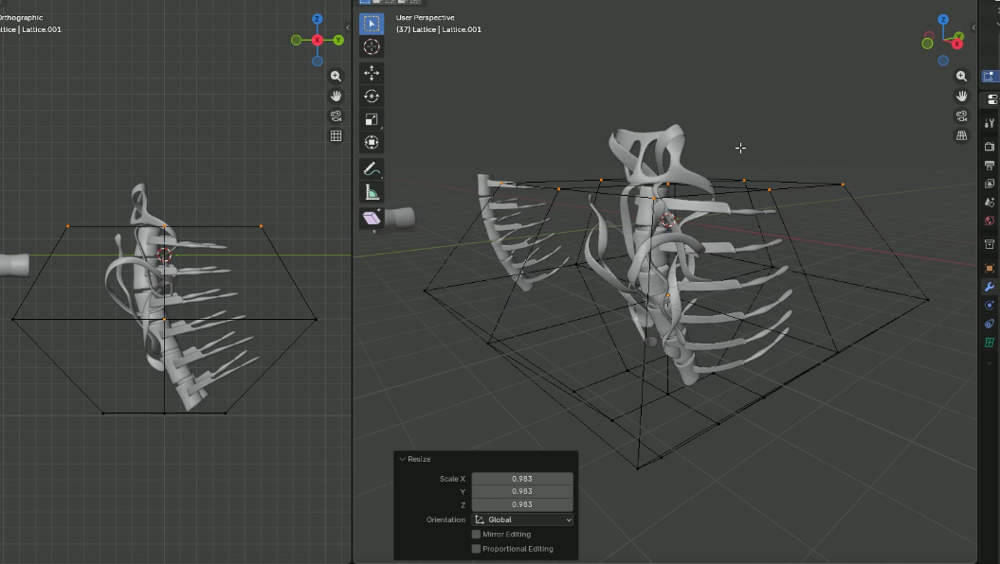
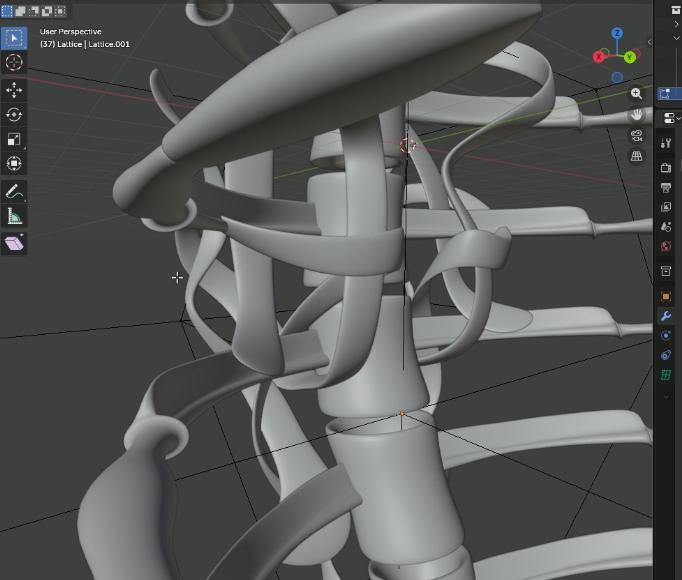
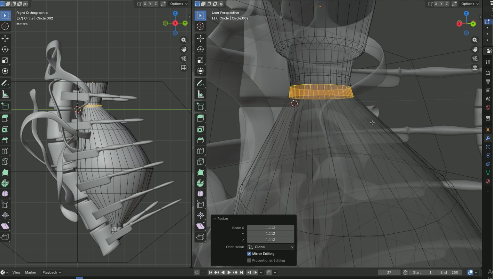
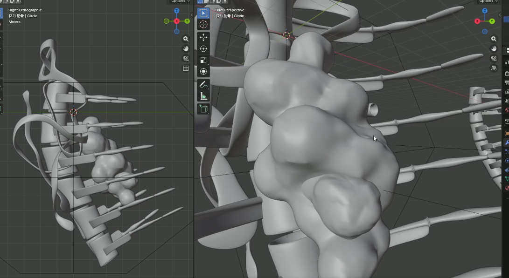
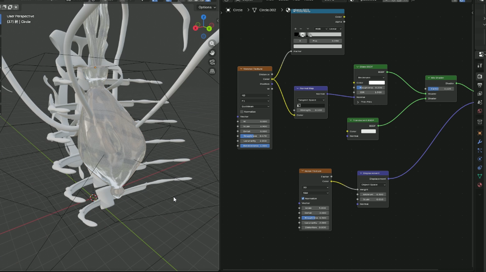
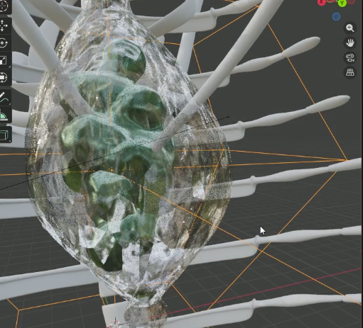
result : 3D Model
The final 3D model of the future symbiotic heart is a visually striking and conceptually rich representation of a futuristic organ that embodies the fusion of biology and technology. The model features a transparent glass heart encased within an intricate skeletal structure, with organic textures and details that evoke a sense of life and vitality. The heart's internal organs are energized by plant energy, creating a dynamic interplay between the synthetic and the natural. This artifact serves as a compelling exploration of the possibilities of future symbiotic technology and its potential impact on human biology.
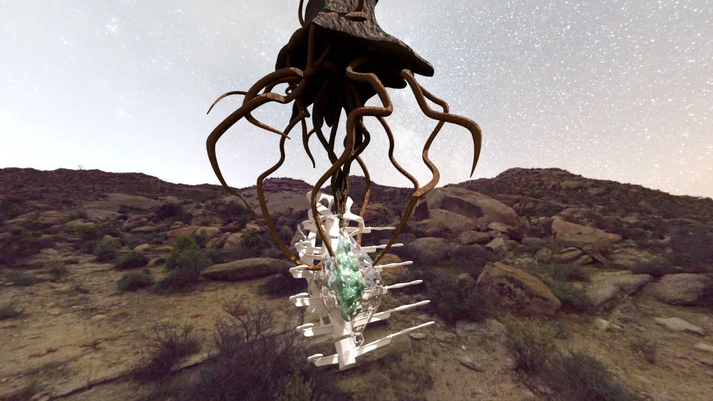